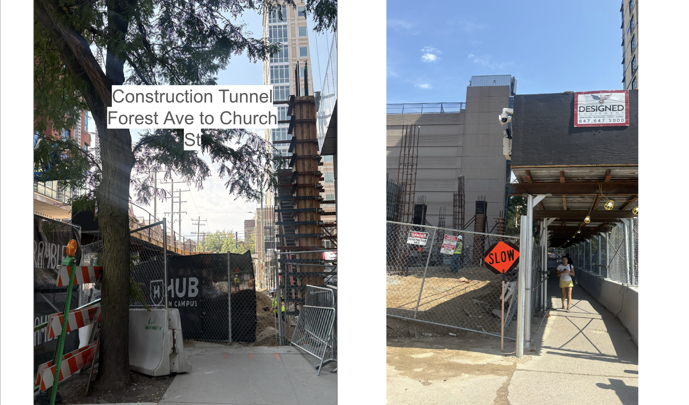

Beginning the Semester in UT330
· Week 2
What I learned
We have discussed definitions of interaction design and watched our definitions change. I believe That interaction design is the design of systems that people use to accomplish tasks. We learned about what information architecture is and how important it is for design purposes. I realized how picky I am about digital wayfinding and web accessibility and just how tricky it is to satisfy myself and all other users. To judge a website or a wayfinding system, you inherently know good from bad design, but when it comes to designing a system from scratch, things become more complicated.

What We Made
We worked on digital communication on sites through activities on paper. We had information that had to be organized in a way that was easy to understand and navigate. This activity changed the way I thought about information architecture and the difficulty of designing a site. Information heirarchy was something I had not put enough thought into previously, which is another reason that I found this activity to be so useful.
Vocabulary from class
- Affordance: what an artifact or environment makes possible for a particular person.
- Signifier: he visible or perceivable cue that tells someone an action is possible
- Feedback: what the system returns after an action.
- Constraint: what limits the available actions. .
- Control: The thing a person operates to cause a change.
- State: the current condition of the system, which determines what can happen next.
- Friction: the effort between intent and completion; Something that makes things more difficult to do. .
- Structure: what exists, how it is organized and what comes first.
- Skeleton: where content, controls, and navigation are placed.
- Surface: color, typography, visual treatment, and styling.
- Information architecture: how information is organized so people can find, understand, and act on it.
- Hierarchy: what appears more or less important.
- Taxonomy: how things are categorized.
- Label: what a category, destination, or action is called.
- Navigation: the system that allows movement through information.
- Sequence: when information appears.
- Progressive disclosure: what appears now versus later.
- Web accessibility: affordances through design (A11Y) that allow those with disabilities or those with less access to web tools that make the use of web, software, etc. easier and more